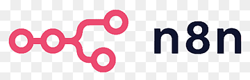

Our Core Technologies for AIOps
We combine leading AI models, automation platforms, and custom integrations to deliver reliable operations automation.

We use AIOps to deliver advanced observability,
automation, and optimization — preventing downtime,
eliminating repetitive work
and boosting performance.
AI-powered observability detects anomalies, predicts failures, and triggers automated fixes before they escalate.
Automate repetitive workflows and remove bottlenecks across teams.
Machine learning models that learn, adapt, and improve your operations over time.
Our Core Technologies for AIOps
We combine leading AI models, automation platforms, and custom integrations to deliver reliable operations automation.
AI-driven automation tailored to your operational needs.
Map your operations, identify automation opportunities, and design your AIOps roadmap.
Implement AI-driven observability with automated incident detection, triage, and resolution.
Replace repetitive manual work with scalable, AI-powered workflows.
Turn raw data into actionable insights for capacity planning, performance tuning, and forecasting.
Build bespoke AI agents and integrations for your unique operational needs.
Equip your team to manage and expand AIOps initiatives.
Identify key operations to automate and create your AI automation plan.
Connect AI models, observability tools, and automation workflows to your existing systems.
Continuously improve automations and expand them across departments.
Quick wins — observability setup, incident triage, and top process automations.
(custom)
What's included:
Full AIOps stack — predictive observability, automated resolution, and ongoing optimization.
(custom)
What's included:
Strategic leadership for enterprise AIOps adoption.
What's included:
For the curious
Let's discuss how NoahQ can help you leverage AI to automate, predict, and optimize your IT and business processes.
hello@noahq.ai
Remote-first, worldwide
Within 24 hours